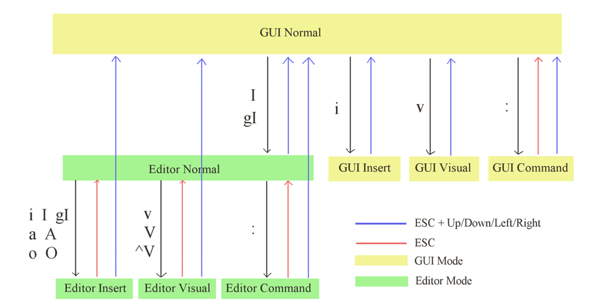
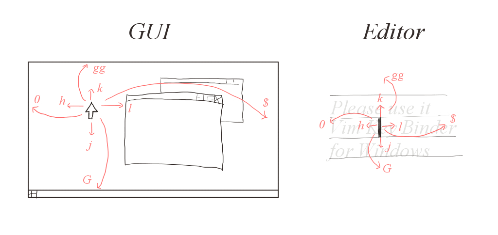

- Please download latest version win-vind from Downloads.
- Execute the installer or unzip.
- Start win-vind.
- In default, the mode is GUI Nomral. You can setup :set or :config or right-click on the system tray.
- In the end, you can terminate win-vind by :exit or right-click on the system tray.
Overview

win-vind has plenty of hotkeys and commands, but they are based on the original Vim. Some little differences are that its mode has two layers and its unique functions for GUI. Concretely, they are GUI Mode and Editor Mode.
- GUI Mode
- Editor Mode
The target is the mouse cursor. For instance, if you input h, moves it to left. However, it does not have a concept called rows and columns, so I implemented a wealth of alternative functions.
It enables to emulate Vim when using general text editors, for instance, notepad or Microsoft Office Word or some Web forms. The target is each caret of text controls. In other words, you can operate a text editor that mainly control by a mouse with key binds of the original Vim.
Note
- F8 + F9 is safe forced termination.
- win-vind cannot operate some windows given high-rank authorization than itself. For example, if you start Task Manager having the highest authorization and select its window, you cannot move, click or scroll the mouse cursor by win-vind. If you want to operate all windows, I recommend giving win-vind the administrator authorization. (Please use Task Scheduler.)
Bindings
You can customize all key bindings by GUI based settings or rewriting JSON settings file easily.
- GUI based
- Rewriting JSON If you use the installer, the file is located in ~/.win-vind/bindings.json.

There are settings in Preferences in the system tray.
If you get zip-version, it is existed in win-vind/config/bindings.json.
Syntax
- [key1](+)[key2] means typing key1 and key2 with same timing.
- [key1]->[key2] means typing key2 after key1.
- It distinguished between upper and lowercase letters. For example, a means a, A does Shift+a.
- If you want to use system keys like Shift or Ctrl, please write KMP key code.
KMP Key Code List (Click Here)
| KMP Key Code | Means |
|---|---|
| IME | unique key at multiple language keyboards in order to switch language. |
| Tab | - |
| Enter | Return Key |
| CapsLock | - |
| Left | ← |
| Right | → |
| Up | ↑ |
| Down | ↓ |
| BkSpace | Back Space |
| LShift | Left Shift |
| RShift | Right Shift |
| Shift | Left Shift or Right Shift |
| LCtrl | Left Control |
| RCtrl | Right Control |
| Ctrl | Left Control or Right Control |
| LWin | Left Windows Key |
| RWin | Right Windows Key |
| Win | Left Windows Key or Right Windows Key |
| LAlt | Left Alt |
| RAlt | Right Alt |
| Alt | Left Alt or Right Alt |
| NoConvert | unique key at multiple language keyboard in order to cancel convert language. |
| Convert | unique key at multiple language keyboard in order to convert language. |
| Kana | unique key at Japanese keyboard in order to switch between Hiragana and Katakana. |
| Esc | Escape Key |
| F1 | Function 1 (supported from 1 to 24) |
| SnapShot | Print Screen, Prt Scr, Sys Rq |
| Scroll | - |
| Pause | Pause, Break |
| Insert | - |
| Home | - |
| End | - |
| PageUp | - |
| PageDown | - |
| Delete | - |
Details of Functions
For example, if shown Are you sure you want to move this file to the Recycle Bin?, it automatically moves the cursor to popup.
If you focus on a selected window, win-vind is only validated on its window. Concretely, if you select a target window, it changes mode to Editor Normal Mode. Also, selected other windows, it changes to GUI Insert Mode. You can switch targeting by Enable Targeting and Disable Targeting.
It makes inputed commands to display and the current mode on the screen.